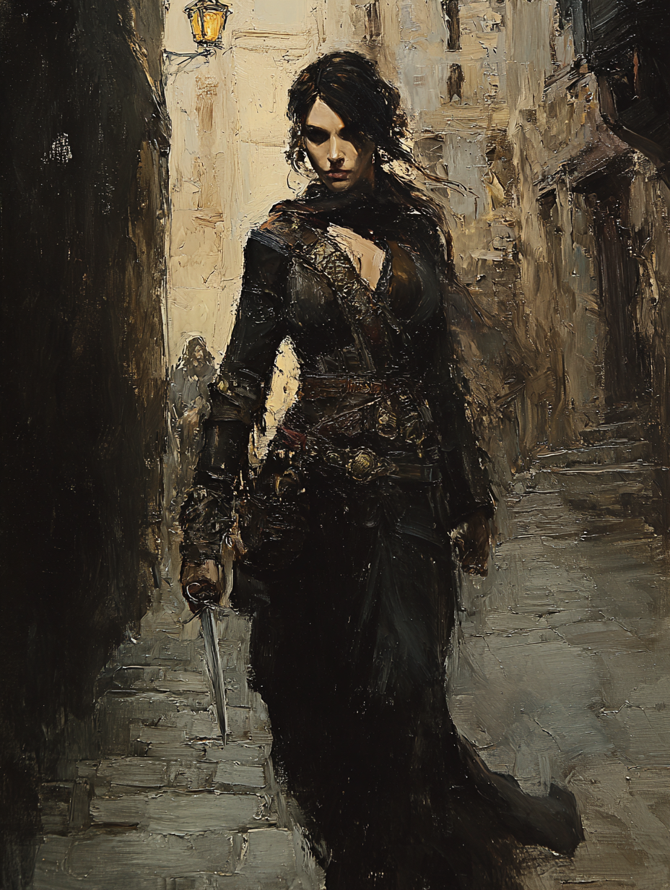

Ayla Sürgün
Yörük Operative of an Unnamed Bureau · The Secret Service

Turkic / Yörük · Aged Thirty-Three
On the Subject
A shadow operative for A Certain Community — the Sublime Porte's discreet intelligence bureau, never named openly in official correspondence and never acknowledged at all in foreign dispatches. Ayla unravels plots threatening the Ottoman Empire, working out of cafés, embassy salons, and rooftops alike.
Her Yörük heritage left her with the nomad's gift of vanishing into any landscape; her training has refined that gift into something closer to art. She speaks five languages, can pass for a courier, a maid, or a merchant's widow, and has never been arrested for the same name twice.
Faculties & Saving Throws
Base array 18, 15, 12, 12, 11, 10; Human +1 to each; Linguist feat +1 Int
Bearing in the Field
Skills
Expertise applied to Stealth and Investigation
| Skill | Bonus | Source |
|---|---|---|
| Deception | +3 | Spy |
| Insight | +3 | Rogue |
| Investigation | +7 | Rogue · Expertise |
| Perception | +3 | Rogue |
| Sleight of Hand | +6 | Rogue |
| Stealth | +8 | Spy · Expertise |
| Stealth (+Int) | +11 | when no disadvantage applies · Secret Service |
| Survival | +3 | Human |
Class Features
Proficiency doubled on Stealth and Investigation.
Extra damage when she has advantage on the attack roll OR an enemy of the target is within 5 ft. of the target. Requires a finesse or ranged weapon.
The hidden language and signs of the underworld.
Dash, Disengage, or Hide as a bonus action.
Casts each spell without expending a spell slot. Intelligence is her spellcasting ability. Spell save DC 13, spell attack +5.
- Disguise Self
- Comprehend Languages
At Level 5, learns alter self, detect thoughts, and invisibility — each 1/day without a slot.
- Can read lips (in any language she knows).
- Can discern simple gestures and whispers in noisy environments within hearing range.
- When she fails or rolls below 10 on a Wisdom or Charisma check, she adds her Int modifier (+3) to the result.
- When she makes a Stealth check without disadvantage, she adds her Int modifier (+3) to the result. (Already factored into the Stealth +11 line in the skills table.)
Feat
Learns three additional languages of her choice — French, Russian, Greek.
She can craft written ciphers. Allies she shares the cipher key with can decode messages she writes; others must succeed on an Intelligence check (DC = Int score + PB = 17 + 2 = 19) to decode an intercepted message, with no limit on attempts.
Background — Spy (Criminal Variant)
Ayla has a reliable contact who acts as her liaison to a network of other criminals and informants. She knows how to get messages to and from this contact, even over great distances — specifically, she knows the local messengers, corrupt caravan masters, and seedy sailors who can deliver word for her.
Deception and Stealth proficiencies (Spy background).
Equipment
- Rapier — a slender European-style épée, French-made, carried under a long coat; 1d8 piercing, finesse; +6 to hit / 1d8+4
- Shortbow + 20 arrows — 1d6 piercing, range 80/320; +6 to hit / 1d6+4
- Hanchar × 3 — utility daggers, period Ottoman style; 1d4 piercing, finesse, light, thrown 20/60; +6 to hit / 1d4+4. One on her belt, one in her boot, one sewn into the lining of whichever coat she's wearing today
- Studded leather — a fitted leather jacket reinforced with worked-iron studs, sewn into the lining to avoid detection on casual pat-down; AC 12 + Dex; total AC 16
- Thieves' tools — Rogue proficiency
- Forgery kit — kept at her safehouse; not class-proficient
- Gaming set — cards — Spy
- Bag of false identifications — travel papers under three different names
- Coded notebook — contacts and dead drops, encrypted with her own cipher
- Locket — with a portrait of someone she does not name and will not discuss
- Field kit — crowbar; hooded lantern; oil; tinderbox; 100 ft of hemp rope; bell on a thin wire; piton × 5; small mirror on a telescoping rod
- No proficiency with a disguise kit, but she has used one before unproficiently. For high-stakes operations she typically relies on her disguise self spell (Subtle Arcana) and an ally with the Help action rather than physical disguise tools.
- Stable of three contact-horses — she does not own them and will not be questioned for taking them
Personality
I learned five languages because every language has a word for what the speakers won't admit out loud. I listen for those.
The empire endures because some of us know how to keep our mouths shut. I am one of those.
There is one operative — one — whose life is mine to protect, regardless of what the bureau orders. The bureau does not know this. It is the only thing they don't know about me.
I do not believe anyone is telling me the truth, ever. This serves me in my work. It has cost me every friendship I have tried to keep.
Connections
- Former co-conspirator with Zehra of the Spinning Veil during an undercover operation.
- Respectful rival of Damla "The Faceless" Sancaktar in subterfuge and cunning.
Her sharp investigative skills and intuition make her ideal for solving mysteries.